← 返回阅读库 · 原论文目录
论文讲解阅读文档 · 多模态语言模型 · v024
Improving fine-grained understanding in image-text pre-training[2401.0986]
视频时长 00:17:35；讲解文字 7,075 字符；提取讲解画面 47 张。按视频原顺序阅读，每段文字保留时间戳。
文字来自整段视频的自动语音转写，按自然停顿分段，并与 PPT / 论文页面 / 演示画面对齐。未将讲解压缩为摘要；术语、数字和口述公式请结合画面及原论文核对。 阅读稿已校正规范部分明确术语误识别；原始逐字稿和每处修改记录另行保留。
讲解画面为源视频截图（640×360），不是可编辑 PPT 文件。全片按每秒 2 帧扫描内容变化，逐步展开页保留；连续动画保留代表画面。清晰度受源视频限制。
下载完整资料包 · 含离线 HTML、PDF、Word、全部 PPT 画面和字幕。
原论文与材料
Improving fine-grained understanding in image-text pre-training · 下载完整 PDF（26 页）
按时间阅读
00:00:00–00:00:07 · 画面 001
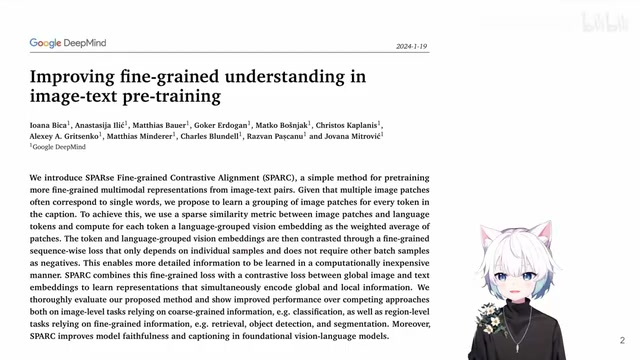
00:00:00–00:00:07 · 画面 001大家好,今天我们来快速梳理一篇论文 Improving Fine-grained Understanding in Image-Text Pre-training。这一篇其实它在标题里面就已经把它要做的事情说得很明白了。我们要做的是 Image-Text Pre-training，就像 Clip 这样的工作，但是我们要做的比它更细致一点。所谓细致就是说我的每一个 patch 和它的文本都要有相互的对应的关系。这个就是本文的核心。
00:00:07–00:00:08 · 画面 002
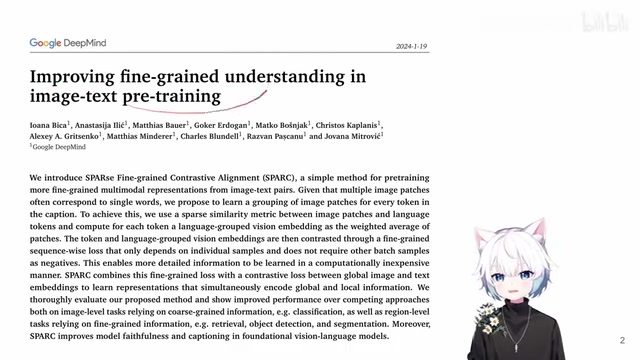
00:00:07–00:00:08 · 画面 00200:00:08–00:00:24 · 画面 003
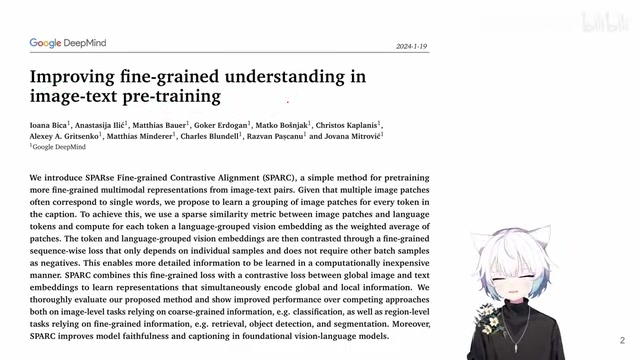
00:00:08–00:00:24 · 画面 00300:00:24–00:00:25 · 画面 004
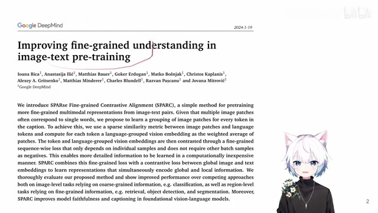
00:00:24–00:00:25 · 画面 00400:00:25–00:00:27 · 画面 005
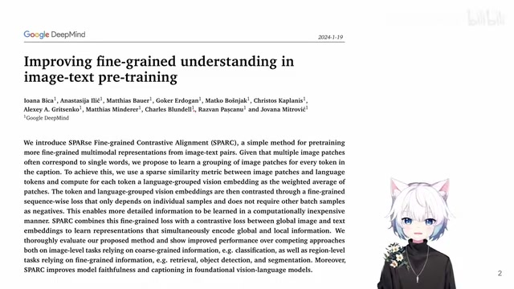
00:00:25–00:00:27 · 画面 005那么简单快速回顾一下
00:00:27–00:00:50 · 画面 006
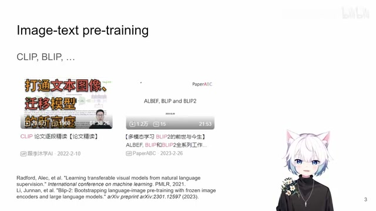
00:00:27–00:00:50 · 画面 006像我们说到这个 image text对吧他们的任务就是要建立一个共同的一个空间。把我们的这个图像也好。文本也好把这两个不同模态的东西给他连接起来。那么这样子呢开启了一系列的很多很有意思的应用。那么像比较经典的对吧。当然 clip网上有非常经典的视频。blip
00:00:50–00:00:52 · 画面 007
00:00:50–00:00:52 · 画面 007这一个系列
00:00:52–00:00:56 · 画面 008
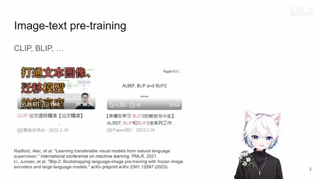
00:00:52–00:00:56 · 画面 008那么当然 clip因为他提出的时间比较早。那对他的改进的空间呢。
00:00:56–00:01:48 · 画面 009
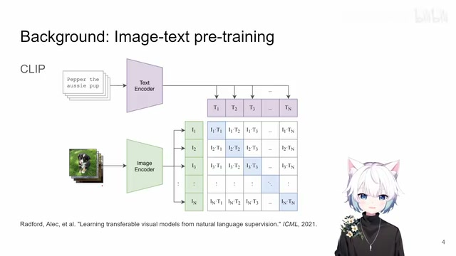
00:00:56–00:01:48 · 画面 009也是有很大的你就比如说像我们本文中要解决的问题。就是你看在原装的 clip 里面。我们一整句话一整个 sentence我提出一个这个 text embedding 出来。他就是一个 vector那一整张图像你提出来也是只用了一个 image classification token。也是只用了一个 vector 来去描述这一整张图像。
然后呢你这个图像的 vector 和文本的 vector。相互做这个对比学习嘛。那这样问题就很明显。就是你用一个 vector它的这个尺寸还不是那么大的一个 vector。尝试呢用它去描述一整张图像的信息。就导致呢他只能够去整体的描述这个图像中的内容。而并不能够更加细致的。对图像中的具体的某一个位置里面的内容。进行更加详细的描述。
那么很自然的在这个基础上呢。就有对他的改进
00:01:48–00:02:14 · 画面 010
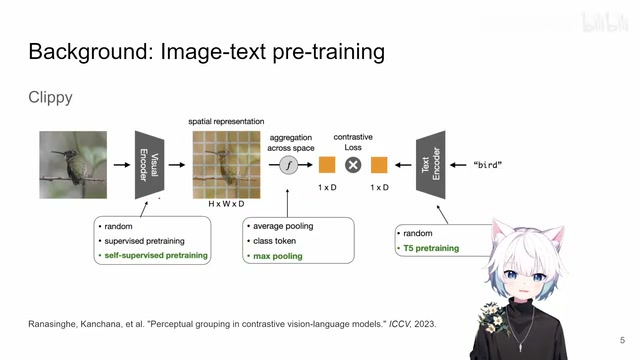
00:01:48–00:02:14 · 画面 010像我们之前介绍过的这篇这个 clip。简单的提过这篇 clip就是他在这个图像中呢。在提出这个图像的这个 embedding 的时候。他不是用这个 classification token而是呢通过这个 max pooling把所有 patch 的这个 embedding 都给它结合起来。结合起来得到一个这个 embedding。
和我们的这个 text encoder同时他也是用了一个 pretrained 好的一个 text encoder。来提了一个 embedding来共同做这个 contrastive loss
00:02:14–00:02:16 · 画面 011
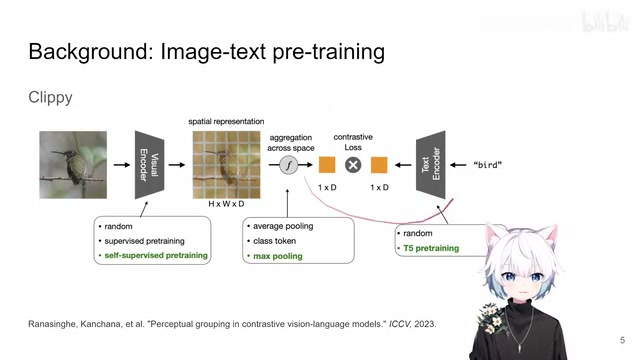
00:02:14–00:02:16 · 画面 01100:02:16–00:02:31 · 画面 012
00:02:16–00:02:31 · 画面 012loss 跟 clip 还是一样的只不过呢他获取这个 image embedding 的方式。相对于 clip 的方式他是直接取了这个 max pooling那与之类似的还有很多相关的工作都是这样的一个思路
00:02:31–00:02:47 · 画面 013
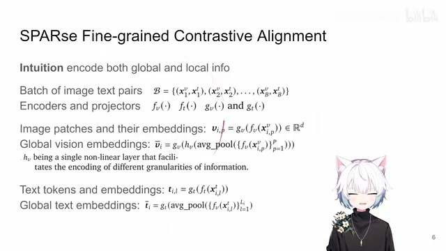
00:02:31–00:02:47 · 画面 013那么这样子呢就来到本文这篇实现了这篇文章呢就是想通过集合各个 patch 之间的信息然后还是他们一起跟这个 text 来交互做文章但是这一篇呢他想要做的更加细致一点他想要同时集合图像的全局的信息还有局部的 patch 的信息同时整合这两种信息一起和这个 text 做 contrastive learning
00:02:47–00:02:49 · 画面 014
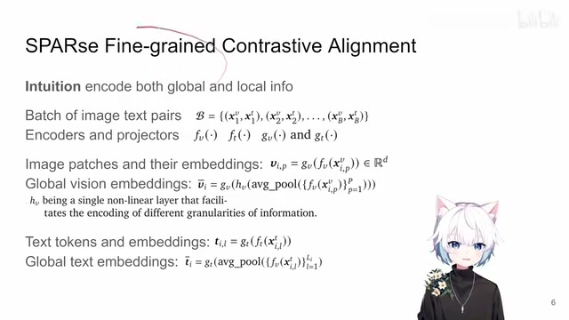
00:02:47–00:02:49 · 画面 01400:02:49–00:03:58 · 画面 015
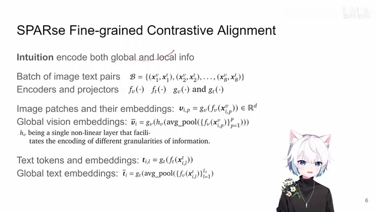
00:02:49–00:03:58 · 画面 015那全局的信息好说对吧就我们就保持跟 clip 一样的配置一整张图里面提一个 embedding 就好了那么局部的信息怎么做呢它做了一个更细致的更细粒度的叫 grouping那么当然在我们具体介绍它的实践之前先使一些符号表达训练的数据集也是文本和图像的对然后各自的 encoder各自的 projector这都一样的但是注意这里有一个点就是把所有 patch 的 token 拿出来做 average pooling同时这里作者说还加了一个 hv他说是一层非线性层但是我实在是没找到
它的具体的 hv 是什么有可能就是一个激活函数但是我没有确定这个事情这是一个小的问题那么对于这个 text 来说还是一整句话送到 encoder projector 里面每一个分词它都有一个 embedding还是同样的做 average pooling average pooling 完了之后再做了 projection作为全局的 text embedding
00:03:58–00:04:02 · 画面 016
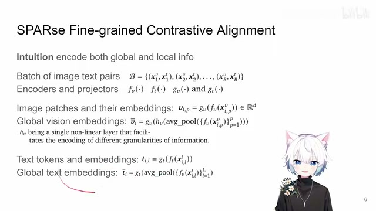
00:03:58–00:04:02 · 画面 016这个是一开始
00:04:02–00:04:06 · 画面 017
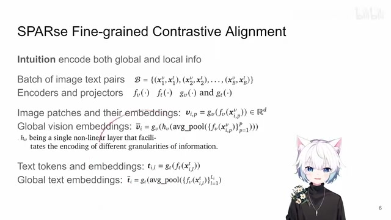
00:04:02–00:04:06 · 画面 017对于全局的信息的一个提取当然全局的信息提取出来
00:04:06–00:04:36 · 画面 018
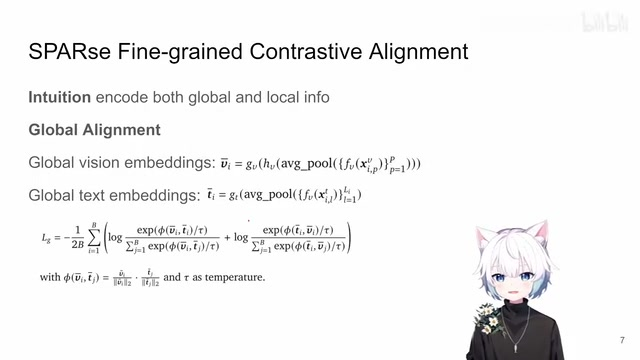
00:04:06–00:04:36 · 画面 018我们刚刚说好的这些方法它做的 loss 跟 clip 一样也是两个 cross entropy 求平均那么前面就是我这个图像要找对我这个文本而不是其他的文本后面就是我这个文本要找对我这个图像而不是其他的图像这个是标准的 clip 的操作但是我们注意它提 global token global embedding 的方式是跟之前的方法有不同的这个呢作者叫他 global alignment 那么再往下呢就是我们更加关注的比较核心的就是本文的这个 local 的 information 它是怎么组建的它的这个监督信号从哪里来
00:04:36–00:04:40 · 画面 019
00:04:36–00:04:40 · 画面 01900:04:40–00:04:41 · 画面 020
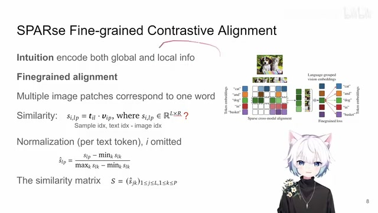
00:04:40–00:04:41 · 画面 02000:04:41–00:06:41 · 画面 021
00:04:41–00:06:41 · 画面 021那么这里就是本文最核心的一个思路它就是说我要根据我这个句子中的每一个单词把这个图像中很多个 patch 给它组合起来具体来说就是这里你看我一张图像经过 Vision Transformer 它肯定不同的 patch 对吧那么这里是一串我对应的单词它要根据比如说这个单词狗这个单词对吧我就要选择一串 token 里面跟狗有关的这些 patch他们的 embedding 他们的 embedding 一起集合做做处理要跟狗的 text 的 embedding 相似这样子就达到了局部监督的这样一个效果
那同理这个硬这个词甚至也可以做啊这个 cat 这个词也可以做对吧等等所有词大家都有份啊也就是说我以文字为抓手让他去找跟他对应的这个 patch embedding 然后呢我们去加强这种联系啊这个呢是本文的核心的思路那么有了这个核心的思路我们就要来看怎么具体去落实这个问题那给定一个文字我怎么样去找他和他相似和他相关的这个 patch 呢对吧那么答案呢就是作者会在这个训练中去算每一个 patch embedding 和这个 text embedding 确切说是这个单词的这个 text embedding 它们之间先来个相似程度吧对吧相似程度也好算就是这个 cos similarity 那注意你看这里它的这个数学表达对吧前面这个 i 是这个一个 batch 里面 sample 或者说这个 dataset 里面 sample 的这个角标这个 l 是这个 text
在这个 sample 里面的角标这个 P 是这个图像里面这个 patch 啊他的这个角标那这里呢他你这样算出来对吧你的长度为 L 个 token 呢这样一句话和长度为 R 个patch 的这样一个图像那注意这里 R 为什么打问号因为它后面都是用了这个大写的 P 这个字母但是呢还是说我有可能有理解错的地方对吧大家就是在这里存个 1 那么这样子呢通过一个简单的这个 cos similarity 我们就能够把每一个单词的这个 token 确切说应该叫 token 啊它不一定把每一个单词就是一整个 token 一个单词有可能是很多的 token 对吧那我们确切的就是把每一个这个 token 稳稳的这个 token
00:06:41–00:07:53 · 画面 022
00:06:41–00:07:53 · 画面 022跟这个图像的这个 token，那它们的相似度就算出来了。那然后呢，做一个简单的这个极大极小值的这么一个 normalization。那注意呢，这里呢是针对这个 text 来做的，也就是说，对于每一个 text token，它去算这个 text token 和所有的 image token 它们之间的相似程度然后在针对同一个 Text Token 的所有的 Image Token 当中我们去找它的最大值最小值然后做这个 Normalization得到了这样的一个修正过的 Similarity
那这样子每一个 Text Token 和每一个 Image Token它们之间就人人有份都有一个相似的程度那后面我们就根据这个相似的程度来把它们组合在一起
00:07:53–00:09:53 · 画面 023
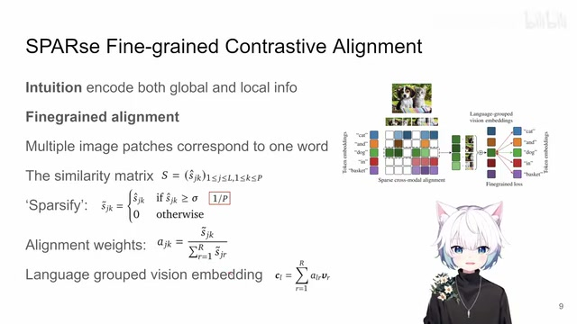
00:07:53–00:09:53 · 画面 023也是一个非常直接的思路对吧我们刚刚说到拿到这个相似的程度那作者呢这里做了一步就是我要把这个相似的这个矩阵给它变得稀疏化那这样子呢就能保证我真正在去选相似的 Patch 的时候不是说所有的这个 Image Patch 都跟这个单词扯上关系大家都上你可以看到呢这里作者用了一个非常简单的切一个阈值这个阈值呢就是 P 分之一P 是这个 Patch 的数量那如果你的这个相似的程度大于这个阈值那我就认为你这个 Patch 跟这个文本是有关系的是相似的那通过这样一个简单的这样一个筛选那作者呢
就把这个 Similarity Matrix 给它修改了一番只保留了这些相似值大的这些位置它呢还保留了原来的这个 Similarity那相似度小的这些位置没有超过这个阈值的这些位置它们的相似程度就改成 0那为什么要留这个相似的矩阵呢对吧你看到这里它用来决定它是根据这个相似的矩阵来决定说我的这个 text 到底跟这个 patch 有多相关那因为就是哪怕你是同一个图像中的不同位置的 patch 它跟同一个 text 它的响应的相似的程度它也不一样那比如说这个 patch 里面它有一半狗一半猫而这个 patch 里面全是狗对吧那它俩
对应的权重就肯定就是不一样了作者是为了做这样一个设计那么最终呢他的这个权重怎么样计算呢根据你的相似的矩阵那么还是对于每一个 Text Token 来说对所有的 Patch Token 求和注意这里又用了一个 R 但应该是这个 P 和 R 是一个东西求完和之后呢再重新分配这个权重就是上次我们只留下了相似的 Patch 之间的它们这个相似程度嘛那么这其实就是一个简单的处理就是让所有跟 text token 相似的这些 image token 他们的加权的这个权重的和是 1 那么拿到这个权重之后呢最终我们要组合成一个 text embedding 根据这个权重把这些 patch 选出来跟这个权重做这个加权和嘛得到的这个叫他们叫做 language group 的 vision embedding 对吧是根据这样一个 language 根据这样一个 text group 出来的这一串的这个 embedding 的
00:09:53–00:09:54 · 画面 024
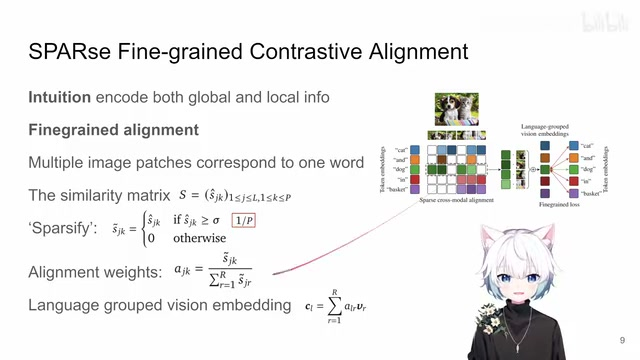
00:09:53–00:09:54 · 画面 02400:09:54–00:10:14 · 画面 025
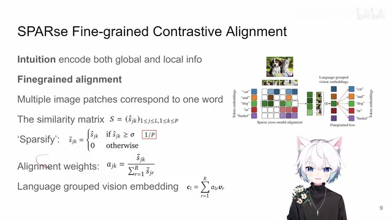
00:09:54–00:10:14 · 画面 02500:10:14–00:10:15 · 画面 026
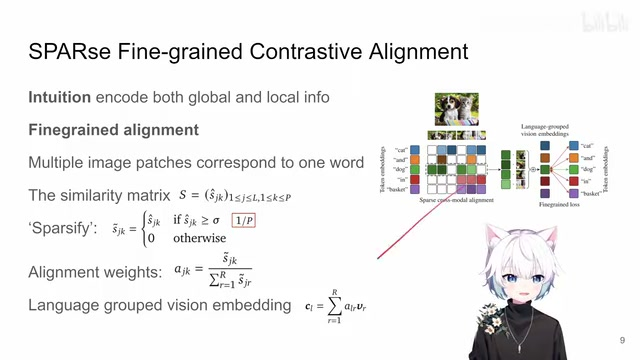
00:10:14–00:10:15 · 画面 02600:10:15–00:10:20 · 画面 027
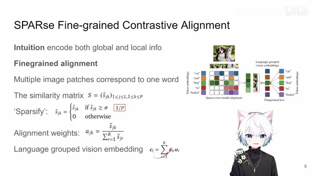
00:10:15–00:10:20 · 画面 027这样一个集合这样一个加权和拿到这个东西跟我们的真正的 text embedding 再去做 contrastive learning 这种 cross entropy loss 再去训练就好了那么这个就是作者怎么样实现他的 local 或者叫 fine-grained alignment 那么至于 loss 本身跟你原来的做了 global 的也没有什么区别只不过这一次因为你的一句话里面你的一个
00:10:20–00:11:05 · 画面 028
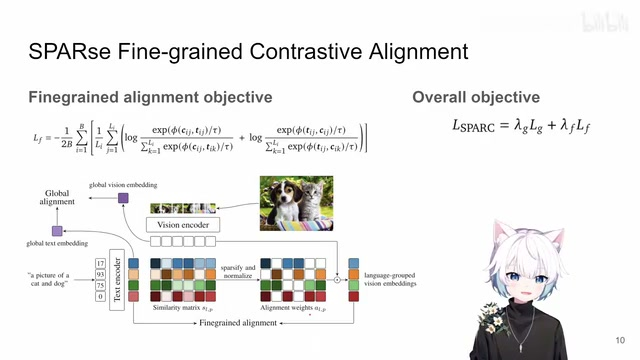
00:10:20–00:11:05 · 画面 028图像和文本对里面它有很多个这个 text token 所以呢这个时候你就把每一个 text token 也理解成一个样本做这样一个 loss 就好了对吧你可以看到这里加了一层对于这个文本的这个求和其实本质上还是一样的东西那么最后呢你的总的这个 loss 就是全局的加上这个局部的这种细致的这个 alignment 这个呢就是本文最核心的这么一个实现
00:11:05–00:11:06 · 画面 029
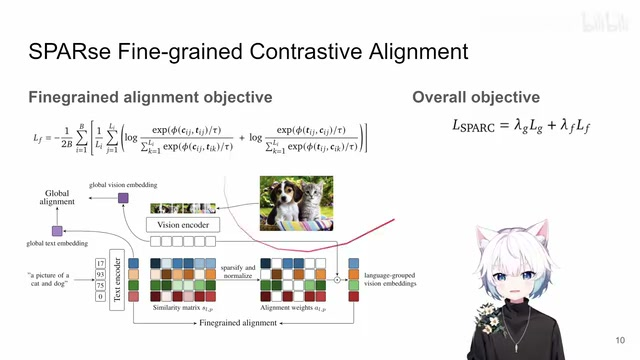
00:11:05–00:11:06 · 画面 02900:11:06–00:11:09 · 画面 030
00:11:06–00:11:09 · 画面 030好的 那么然后我们直接来看到作者的这个实验的部分
00:11:09–00:11:54 · 画面 031
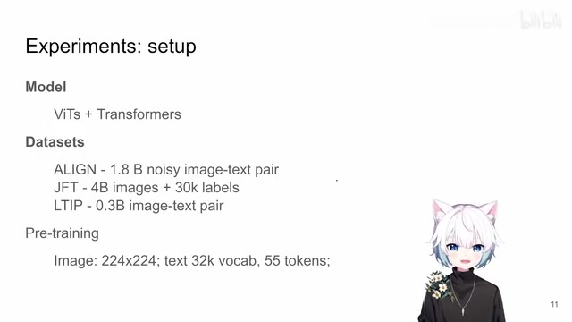
00:11:09–00:11:54 · 画面 031实验这个选择模型也是很基础的标准的 Transformer 来处理这个文本然后 Vision Transformer 来处理图像那你看到他用了数据集他这个规模 对吧你也不意外为了做这种工作为了做这种尺度的学习数据集小不了的那么然后你就可以开始训练了有了 Loss 有了模型 有了数据那所有的图像都是处理成这个 224x224 的然后你的文本它的这个词库是 32k 的这样一个词库就是你这一句话 Tokenize 的时候有 32k 这样的一个选择这里作者还限制了文本的这个长度限制到 55 个 Token 里面
这个是作者这个 Pretraining 的一点小的设置当然具体的实验的配置还是你要去他的论文中去详细的查看那么然后我们就来看作者汇报的一些实验结果首先最经典的就是 Zero-shot Image Classification 跟 Clip 一样你直接把 ImageNet 所有的类来都取出来就分别去算图像的 embedding 和这个 text embedding 和每一个 text embedding 它的相似的程度
00:11:54–00:11:55 · 画面 032
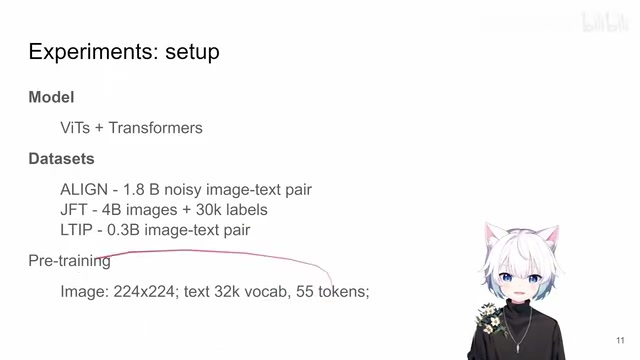
00:11:54–00:11:55 · 画面 03200:11:55–00:12:03 · 画面 033
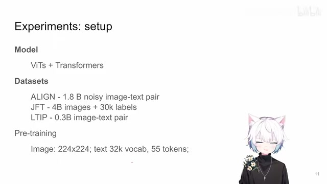
00:11:55–00:12:03 · 画面 03300:12:03–00:12:25 · 画面 034
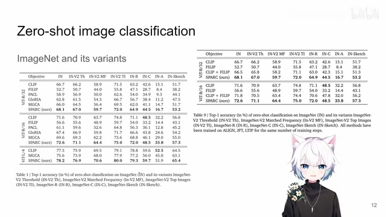
00:12:03–00:12:25 · 画面 034对吧这个就跟 clip 一样的这是一些结果包括各种各样的这个 image net 这是一些结果那么注意呢这里有一个区别于原版 clip 的一个方法这里叫做 prompt ensembling 那么这个技术呢其实是从这个 philip 他来提出来的那就是你看到原来呢我们做这个 prompt 的时候比如说我要判断这是不是一个狗的图像我就说 a photo of a dog
00:12:25–00:12:27 · 画面 035
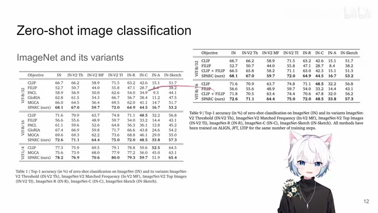
00:12:25–00:12:27 · 画面 03500:12:27–00:13:12 · 画面 036
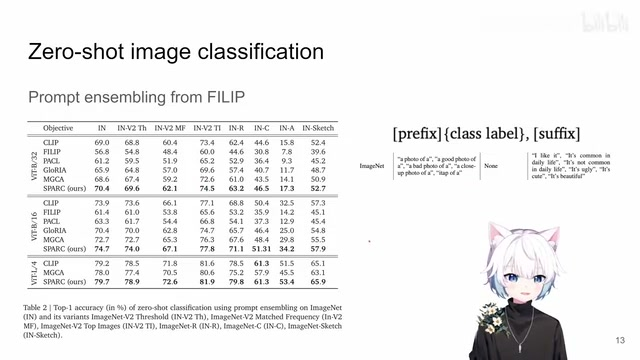
00:12:27–00:13:12 · 画面 036把这句话送到我们的 text encoder 里面然后去算 text embedding 和 image embedding 它们的相似程度但是这篇文章的观察是我如果在这样的 prompt 后面加上这样的额外的一句话加上一些后缀作者发现性能会比直接的只有 a photo of something 有改善那么当然这个观察是从这篇论文里面出来的这里作者汇报了有了 prompt ensembling 之后的一些结果那么再往下很经典的
00:13:12–00:13:32 · 画面 037
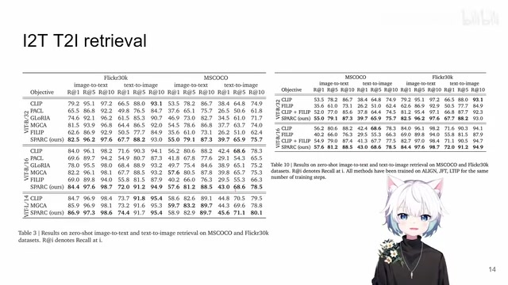
00:13:12–00:13:32 · 画面 037这个 image-to-text text-to-image 这样的 retrieval对吧毕竟陪生硬的目的不就是为了来找一个让他们表达相同意思的东西在这个 latent space 里面相近不同意思的东西他们意思相互远离对吧你可以看到这是他们提供的性能的结果这里作者还引入了一些
00:13:32–00:14:12 · 画面 038
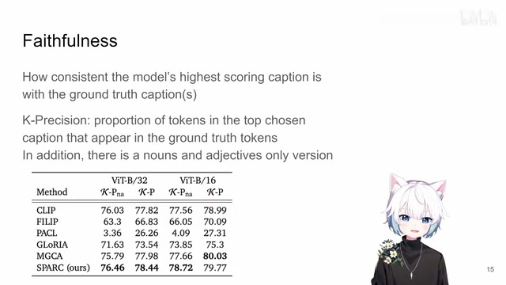
00:13:32–00:14:12 · 画面 038不那么常规的实验来帮助我们更好地去理解这个模型的性能比如说这个 faithfulness就是我模型最高的输出得分的这个 caption就是文本的这个描述跟 ground truth 这个 caption它们有多匹配多相似呢那怎么衡量这个东西呢这里作者说我用了一个叫做 k-precision具体来说就是有多少 token你预测出来的这个 token在这个 ground truth这个 token 里面它出现了你就看它出现的这个比例这样子来衡量这个模型有没有在在乱讲话对吧那么这里呢
作者汇报了一些结果
00:14:12–00:14:13 · 画面 039
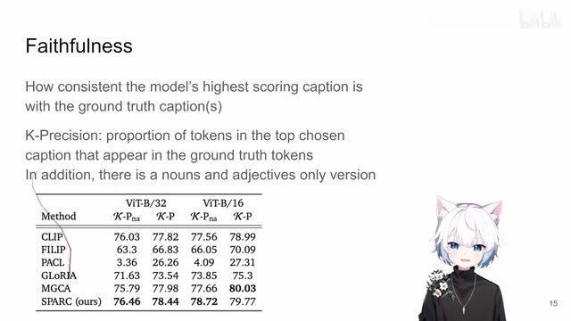
00:14:12–00:14:13 · 画面 03900:14:13–00:14:29 · 画面 040
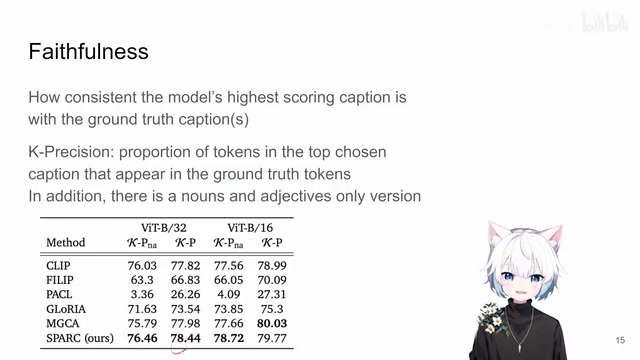
00:14:13–00:14:29 · 画面 040同时呢作者还测试了那这里呢你看到还有一个 NA 的配置就是说这里作者只统计了名词和形容词的这些 token 他在 ground truth 里面 token 他在 ground truth token 里面出现了这个比例这是另一个指标那么当然了你既然是号称能做 fine-grained 你就真的做一个这个 localization 这样的任务来试试看呗那比如说这里作者把 Pretrain 好的模型放到一个下游任务上用的是这个 OWL-ViT 对吧这个我们也之前也介绍过了我 Pretrain 好之后在这些数据集上 fine-tuning 来看它效果怎么样这时作者取得一些结果那么同时呢
00:14:29–00:15:16 · 画面 041
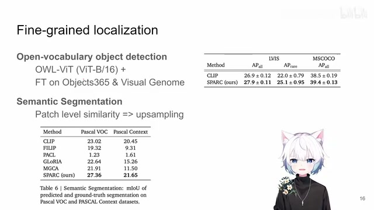
00:14:29–00:15:16 · 画面 041那这里呢针对你的这个输入的文本嘛作者就直接算每个 patch 和这个文本他们这个 similarity 嘛然后呢把得到的结果生产样让它这个输出的结果能够跟原始图像的尺寸匹配嘛那么拿过来在这些标准的这个 segmentation 的数据集上跑一跑结果来看到是什么样子的这里还有一个可视化对吧作者肯定是找了一些看着不错的例子 label 长什么样子我们的模型的输出是什么样子再对比其他的模型对吧这一点上你可以看到 clip
00:15:16–00:15:55 · 画面 042
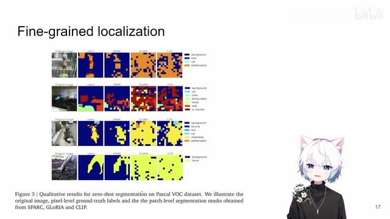
00:15:16–00:15:55 · 画面 042他做的确实是有进步的空间对吧这个其实也都是大家的共识了克里普经常是把所有的可能图像中的微小的差别的有图像中有微小差别的这样的图像他们都投到一个相似的非常相似的甚至相同的这样一个 embedding 里面就是他在做这种小的颗粒度的区分呢并不是很好这个呢是一些视觉上的观察
00:15:55–00:16:12 · 画面 043
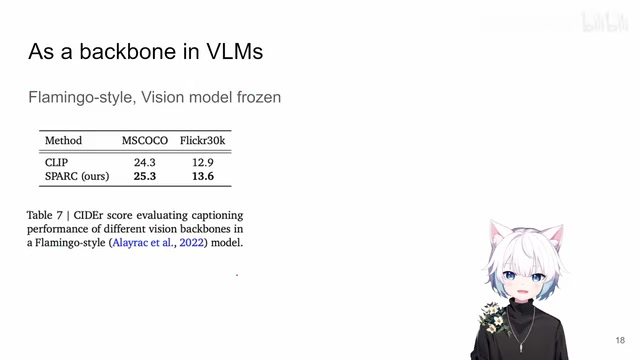
00:15:55–00:16:12 · 画面 043那么当然呢作者还研究了他如果说啊我用这个 pretrained 好的模型我用他作为这个 Vision-Language Model 里面的这个 backbone 啊比如说按照 flamingo 那样的方法啊去看他的这个视觉的 encoder 怎么样啊真的是他们有资源能够去做这样详细的测试
00:16:12–00:16:21 · 画面 044
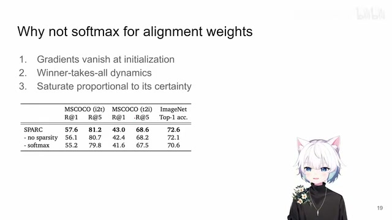
00:16:12–00:16:21 · 画面 044那么后面还有对吧作者还在附录里面研究了说为什么我不直接进入一个简单的这个 softmax 为什么这里作者列出了一些原因那还是感兴趣的朋友呢非常推荐你到附录中去查看它详细的描述查看它更多详细的实验那么总的来说呢这一篇呢就是通过引入了更加细致的 contrastive loss
00:16:21–00:16:22 · 画面 045
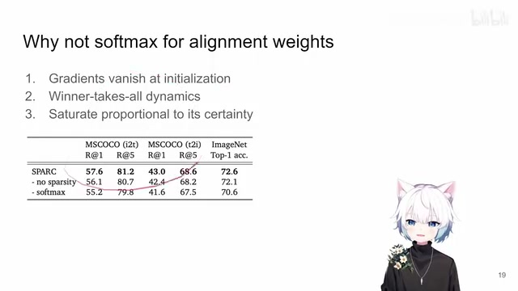
00:16:21–00:16:22 · 画面 04500:16:22–00:17:34 · 画面 046
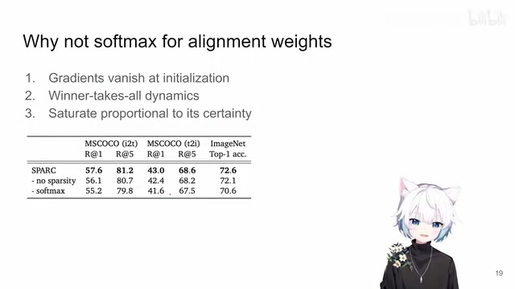
00:16:22–00:17:34 · 画面 046主要是它通过每一个 Text Token 来组合这些 Image Patch Token 来达到一个实现更细粒度的学习的这样一个效果我们选这篇文章是因为你在 2024 年这个时间假如说你刚刚想进入 Text-Image Pre-training 这个领域可能对于你现在做研究来讲可能是绕不开的这么一个东西啊他其实是一个很好的抓手你去看他的实验的配置整个一套下来然后你去看他的 related work 他之前对于这些工作的搜罗啊还是一个可以参考的这样一篇文章的啊好的那么基本上以上呢就是我对这个论文一个快速的整理啊那么今天还是同样的又是一个特殊的日子啊我们有节日过的朋友根据我们这个频道的惯例
祝各位春节愉快,阖家欢乐。那么对于没有节日的过的朋友,这个视频就是录给你们的。好的,那么感谢您的收看,请多多指点。
00:17:34–00:17:35 · 画面 047
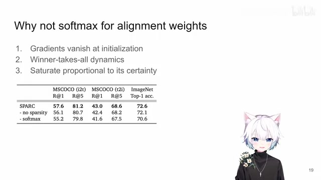
00:17:34–00:17:35 · 画面 047转写与来源说明 · 2 个自动复核提示
保留 229 个原始语音片段，2 个片段触发自动复核提示。提示仅用于定位可能的术语、重复或识别问题，不等于已确认错误。
讲解画面为源视频截图（640×360），不是可编辑 PPT 文件。全片按每秒 2 帧扫描内容变化，逐步展开页保留；连续动画保留代表画面。清晰度受源视频限制。
原视频：paper/合集_2026-10-16_多模态语言模型/[论文简析]Improving fine-grained understanding in image-text pre-training[2401.0986].mp4
SHA-256：0d80eabb36dc98c420d5840367b7af4c2f1100c11a88948239fe0d8e18fe6cbb
然后做这个 Normalization
text-to-image 这样的 retrieval
全文按视频语音与画面制作。原论文可从上方链接下载；完整资料包保留全文、原始逐字稿、字幕和校对记录。